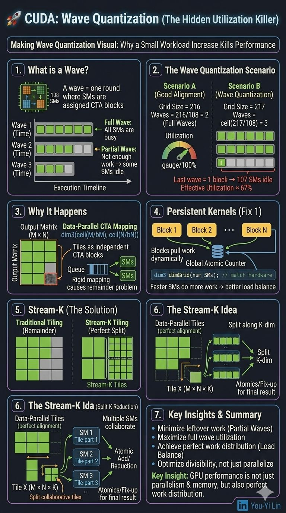

Why adding just 1 block can drop GPU utilization to 67%
Most people optimizing CUDA miss this. It's called wave quantization, and it's a critical bottleneck that prevents hardware from reaching its peak theoretical throughput.
Wave quantization
The scheduler tries to fully utilize SMs by distributing CTAs. But when total work is not perfectly divisible by SM count, the GPU must launch extra waves with low utilization.
What is a wave
A wave is one round where all SMs are assigned work (CTAs).
- Full wave — all SMs are busy.
- Partial wave — not enough work, so some SMs sit idle.
Performance drops even if the total workload is large.
Where the problem appears
Consider a GPU with a fixed SM count. When the grid size slightly exceeds a multiple of that count, the last wave becomes extremely inefficient:
Example (GPU: 108 SMs)
Scenario A (good alignment):
Grid size = 216
Waves = 216 / 108 = 2 → 2 full waves
Effective utilization = 100%
Scenario B (wave quantization):
Grid size = 217
Waves = ceil(217 / 108) = 3 → last wave = 1 block → 107 SMs idle
Effective utilization = 217 / (3 × 108) ≈ 67%Why this happens
Work is discretized into CTAs (tiles). The output matrix shape (bM × bN) is fixed at compile time, and the grid is dim3(ceil(M/bM), ceil(N/bN)). This rigid mapping causes imbalance in real workloads.
Persistent kernels — the first fix
Launch a number of blocks roughly equal to the number of SMs, instead of statically mapping one CTA to one tile. Blocks dynamically "pull" work using a global atomic counter — each block fetches the next tile when it finishes. Faster SMs end up doing more work, giving better load balance.
int num_SMs;
cudaGetDeviceAttribute(&num_SMs, cudaDevAttrMultiProcessorCount, device_id);
dim3 dimGrid(num_SMs); // match hardwareStream-K — the real solution
Persistent kernels solve the imbalance, but not the divisibility problem itself. Stream-K solves the "remainder problem" by splitting the workload into:
- Data-parallel tiles — perfectly aligned full waves.
- Stream-K tiles — the leftover work.
The Stream-K idea is to not assign leftover tiles as independent CTAs. Instead, it computes the total remaining workload (M × N × K) and evenly distributes it across all SMs — multiple SMs collaborate on the same output tile, splitting along the K dimension (a reduction), then combine results via atomics or a fix-up pass.
Key insight
GPU performance isn't just parallelism and memory optimization — it's also perfect work distribution.
